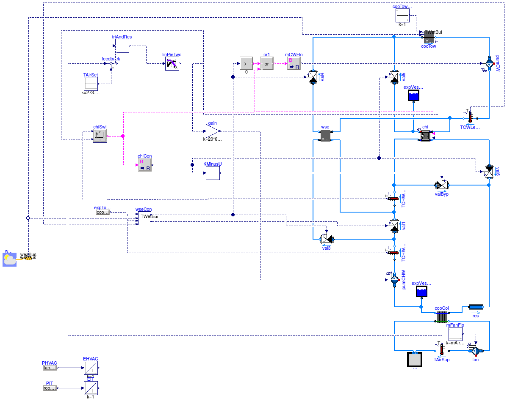
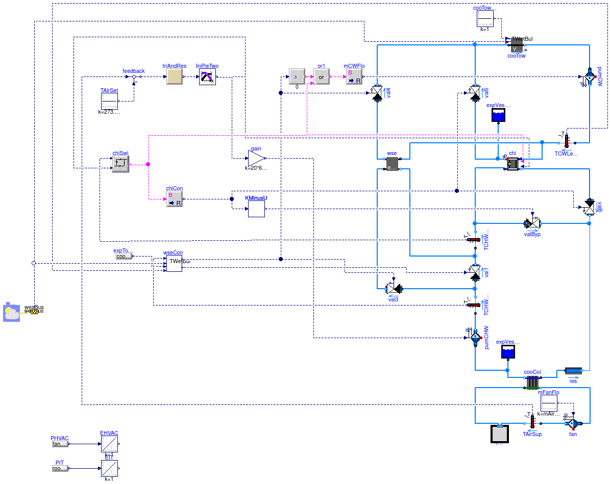

Chiller plant with water side economizer for data center
This example demonstrates the implementation of a chiller plant with water-side economizer (WSE) to cool a data center. The system schematics is as shown below.

The system is a primary-only chiller plant with integrated WSE. The objective was to improve the energy efficiency of the chilled water plant by optimizing the control setpoints. The room of the data center was modeled using a mixed air volume with a heat source. Heat conduction and air infiltration through the building envelope were neglected since the heat exchange between the room and the ambient environment was small compared to the heat released by the computers.
The control objective was to maintain the temperature of the supply air to the room, while reducing energy consumption of the chilled water plant. The control was based on the control sequence proposed by Stein (2009). To simplify the implementation, we only applied the controls for the differential pressure of the chilled water loop, the setpoint temperature of the chilled water leaving the chiller, and the chiller and WSE on/off control.
The WSE is enabled when
where Tws is the temperature of chilled water leaving the cooling coil, Twet is the wet bulb temperature, ΔTt is the temperature difference between the water leaving the cooling tower and the air entering the cooling tower, ΔTw is the temperature difference between the chilled water leaving the WSE and the condenser water entering the WSE.
The WSE is disabled when
where Twc is the temperature of condenser water leaving the cooling tower, ΔTwse,off = 0.6 K is the offset temperature.
The control strategy is as follows:
where Tchw,ent is the tempearture of chilled water entering the chiller, Tchi,set is the setpoint temperature of the chilled water leaving the chiller, and ΔTchi,ban is the dead-band to prevent short cycling.
The setpoint reset strategy is to first increase the different pressure, Δp, of the chilled water loop to increase the mass flow rate. If Δp reaches the maximum value and further cooling is still needed, the chiller remperature setpoint, Tchi,set, is reduced. If there is too much cooling, the Tchi,set and Δp will be changed in the reverse direction.
There are two implementations for the setpoint reset.
The model Buildings.Examples.ChillerPlant.DataCenterDiscreteTimeControl implements a discrete time trim and response logic as follows:
The model Buildings.Examples.ChillerPlant.DataCenterContinuousTimeControl uses a PI-controller to approximate the above trim and response logic. This significantly reduces computing time.
For both models, the control signal u is converted to setpoints for Δp and Tchi,set as follows:
where Δpmin and Δpmax are minimum and maximum values for Δp, and Tmin and Tmax are the minimum and maximum values for Tchi,set.
Stein, J. (2009). Waterside Economizing in Data Centers: Design and Control Considerations. ASHRAE Transactions, 115(2), 192-200.
Taylor, S.T. (2007). Increasing Efficiency with VAV System Static Pressure Setpoint Reset. ASHRAE Journal, June, 24-32.
Extends from Modelica.Icons.ExamplesPackage (Icon for packages containing runnable examples).
| Name | Description |
|---|---|
| Model of data center that approximates the trim and response logic | |
| Model of data center with trim and response control | |
| Model of a data center connected to renewable energy generation | |
| Package with base classes for Buildings.Examples.ChillerPlant |
 Buildings.Examples.ChillerPlant.DataCenterContinuousTimeControl
Buildings.Examples.ChillerPlant.DataCenterContinuousTimeControl
Model of data center that approximates the trim and response logic

This model is the chilled water plant with continuous time control. The trim and response logic is approximated by a PI controller which significantly reduces computing time. The model is described at Buildings.Examples.ChillerPlant.
See Buildings.Examples.ChillerPlant.DataCenterContinuousTimeControl for an implementation with the discrete time trim and response logic.
Extends from Buildings.Examples.ChillerPlant.BaseClasses.DataCenter (Primary only chiller plant system with water-side economizer), Modelica.Icons.Example (Icon for runnable examples).
| Type | Name | Default | Description |
|---|---|---|---|
| replaceable package MediumA | Air | Medium model | |
| replaceable package MediumW | Water | Medium model | |
| MassFlowRate | mAir_flow_nominal | roo.QRoo_flow/(1005*15) | Nominal mass flow rate at fan [kg/s] |
| Power | P_nominal | 80E3 | Nominal compressor power (at y=1) [W] |
| TemperatureDifference | dTEva_nominal | 10 | Temperature difference evaporator inlet-outlet [K] |
| TemperatureDifference | dTCon_nominal | 10 | Temperature difference condenser outlet-inlet [K] |
| Real | COPc_nominal | 3 | Chiller COP |
| MassFlowRate | mCHW_flow_nominal | 2*roo.QRoo_flow/(4200*20) | Nominal mass flow rate at chilled water [kg/s] |
| MassFlowRate | mCW_flow_nominal | 2*roo.QRoo_flow/(4200*6) | Nominal mass flow rate at condenser water [kg/s] |
| Pressure | dp_nominal | 500 | Nominal pressure difference [Pa] |
| Type | Name | Description |
|---|---|---|
| Bus | weaBus |
Buildings.Examples.ChillerPlant.DataCenterDiscreteTimeControl
Model of data center with trim and response control

This model is the chilled water plant with trim and response control, which is a discrete time control logic.
The trim and response logic is approximated by a PI controller which significantly reduces computing time. The model is described at Buildings.Examples.ChillerPlant.
See Buildings.Examples.ChillerPlant.DataCenterContinuousTimeControl for an implementation that approximates the trim and response logic by a continuous time controller.
Extends from Buildings.Examples.ChillerPlant.BaseClasses.DataCenter (Primary only chiller plant system with water-side economizer), Modelica.Icons.Example (Icon for runnable examples).
| Type | Name | Default | Description |
|---|---|---|---|
| replaceable package MediumA | Air | Medium model | |
| replaceable package MediumW | Water | Medium model | |
| MassFlowRate | mAir_flow_nominal | roo.QRoo_flow/(1005*15) | Nominal mass flow rate at fan [kg/s] |
| Power | P_nominal | 80E3 | Nominal compressor power (at y=1) [W] |
| TemperatureDifference | dTEva_nominal | 10 | Temperature difference evaporator inlet-outlet [K] |
| TemperatureDifference | dTCon_nominal | 10 | Temperature difference condenser outlet-inlet [K] |
| Real | COPc_nominal | 3 | Chiller COP |
| MassFlowRate | mCHW_flow_nominal | 2*roo.QRoo_flow/(4200*20) | Nominal mass flow rate at chilled water [kg/s] |
| MassFlowRate | mCW_flow_nominal | 2*roo.QRoo_flow/(4200*6) | Nominal mass flow rate at condenser water [kg/s] |
| Pressure | dp_nominal | 500 | Nominal pressure difference [Pa] |
| Type | Name | Description |
|---|---|---|
| Bus | weaBus |
 Buildings.Examples.ChillerPlant.DataCenterRenewables
Buildings.Examples.ChillerPlant.DataCenterRenewables
Model of a data center connected to renewable energy generation

This model illustrates a data center with DC and AC load.
The electrical supply is from a grid, from wind turbines and from PV.
The battery is charged during the night and discharged during
the day in such a way that it is fully charged and discharged.
This control logic is implemented using a finite state machine
inside the model con.
Extends from Modelica.Icons.Example (Icon for runnable examples).
| Type | Name | Description |
|---|---|---|
| Bus | weaBus | Weather data bus |